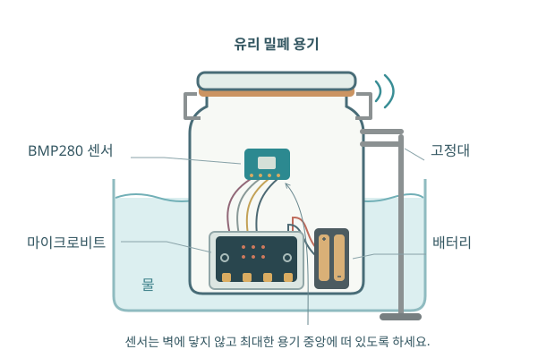

기록 일시정지 중 · 현재 값만 표시하며 새 값은 저장되지 않습니다. 측정하기 화면에서 기록을 재개할 수 있어요.
USB 프로그램 설치를 진행 중이에요. 장치 준비 화면에서 진행 상황을 확인하고 USB와 이 탭을 유지해 주세요.
온도 · 압력 · 발견
밀폐한 공기를 데우면
압력은 어떻게 달라질까요?
장치를 연결하고, 두 값의 변화를 함께 살펴보세요.
우리의 관찰에서 기체의 규칙을 찾아봅니다.
micro:bit V2 · BMP280 · 노트북 Chrome / Edge

장치를 준비해요
배선부터 무선 수신까지 한 단계씩
변화를 관찰해요
온도와 압력을 같은 시간에 비교
자료로 탐구해요
원하는 자료를 골라 관계 찾기
저장된 실험
저장소를 확인하고 있어요.
01 / 장치 준비
하나씩 따라해 볼까요?
모델은 자유롭게 돌려볼 수 있어요.
선 색보다 실제 보드의 단자 이름을 확인하세요.
02 / 측정하기
온도와 압력이 보내는 신호
새 측정값을 기다려요. 준비 구간부터 자동으로 기록합니다.
아직 받은 값이 없어요
시간에 대한 온도와 압력
장치를 연결하면 여기에 새 값이 표시돼요.
조작·수신 기록
03 / 자료 분석
자료에서 관계를 발견해요
시간에 따른 변화
아직 불러온 자료가 없어요.
점이나 행을 선택하면
여기에서 자료를 살펴볼 수 있어요.
두 물리량의 관계
그래프의 점을 선택하면 여기에서 자료를 살펴볼 수 있어요.
추세선을 켜면 두 물리량의 관계를 수치로 살펴볼 수 있어요.
상세 보기
기울기는 가로축 값이 1단위 늘어날 때 세로축 값이 얼마나 달라지는지 나타냅니다. y절편은 가로축 값이 0일 때 이 직선이 가리키는 값입니다.
x절편은 직선의 세로축 값이 0이 되는 지점입니다. 측정 범위 밖으로 연장했다면 실제 측정값과 구분해서 해석하세요.
R²는 선형 모형이 자료의 변화를 얼마나 설명하는지 나타냅니다. 높은 값만으로 비례 관계나 측정의 정확성이 입증되지는 않습니다.
발견한 관계를 내 말로 정리해 볼까요?
발견한 관계를 설명해요
그래프를 근거로, 나의 실험을 나의 말로 정리해 보세요.
아래에는 설명을 작성할 때 가져온 그래프가 남아 있어요.
제외한 자료도 설명의 근거가 될 수 있어요
자료를 제외한 이유가 설명과 어떻게 연결되는지 살펴보세요.
다른 물리량으로 바꿔 살펴본 이유는 무엇인가요?
측정한 구간과 직선을 연장한 구간의 해석에는 어떤 차이가 있나요?
x절편의 의미 다시 살펴보기
이 온도–기압 직선의 x절편은 기압이 0hPa가 되는 온도를 가리킵니다. 절대영도를 추정하는 근거로 살펴볼 수 있지만, 실제로 그 온도까지 측정한 값은 아닙니다.